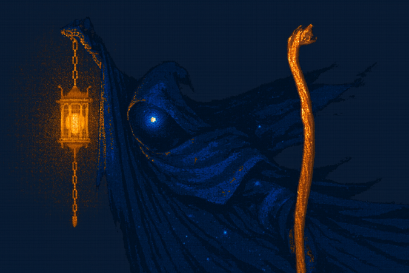

Au début, il y avait le vide absolu dans les confins du Néant Abyssal. Et bien que de nos jours personne ne puisse vraiment le nier, ce ne fut pas tout à fait le cas.
Dans ce désert infini, il y résidait une cage. Celle-ci avait toujours été là sans qu’on ne sache d’où elle venait.
Derrière les barreaux de cette sombre cellule, était enchaînée une entité qui portait le nom de Nocthériga. Cette prison inviolable l'avait laissée affamée et dans un perpétuel ennui depuis des milliards d'années. Ses pensées étaient si profondes et si noires qu'un jour elles s'effondrèrent sur elle-même.

Les Grands mages des premiers cycles appelèrent cet événement céleste qui dégagea une quantité exceptionnelle de matière et d'énergie «Saga». En provoquant ce cataclysme, Nocthériga bascula dans une dimension parallèle proche de son univers d'origine.
Au même moment, de nombreux portails déversèrent de la matière aux quatre coins de l'univers. Ces substances qui ne l'avaient pas suivie dans l'autre monde étaient les composantes restantes de Nocthériga.
Surpuissantes et incontrôlables, elles se diffusèrent dans toutes choses et dans tous lieux. La partie de son corps qui resta dans l'univers connu se nommait le Noctherium. Alors, à travers cette énergie consciente qui servit de connexion à l'entité énigmatique...
Elle put expérimenter, en créant des étoiles, ainsi que des galaxies. Et peu à peu elle sortit de son ennui morne et infini.
Son ultime but n'était ni le bien, ni le mal. Mais seulement d'observer et connaître de nouvelles expériences à travers toutes formes de vie. Malgré son extraordinaire évasion et sa victoire contre le Néant Abyssal, une partie de son corps restera prisonière de la cage pour l'éternité.